|
MachV/Mozilla: Mail & News |
UI Specification
|
|
Autocomplete Addressing |
Last
Modification:
|
|
Author: Jennifer Glick |
Status: Draft |
||||||||||
|
Quicklinks: Design Details |
Feature Team
|
Items in italics are not yet implemented.
This document describes how automatic name completion (a.k.a. Pinpoint Addressing) will work in the Addressing Pane of the Mail Compose window.
Provide a method for users to easily address mail and news
messages against local address books, LDAP directories and
newsgroups.
|
Fundamental Tasks |
|
|
Intermediate Tasks |
|
|
Advanced Tasks |
|
Address autocompletion in the Mail Compose addressing area makes it easy for users to quickly address messages without having to remember the email address of recipients. Names typed into the addressing pane of the mail compose window are compared with names in local address books and a specified LDAP directory (multiple LDAP directories to be available in the future).
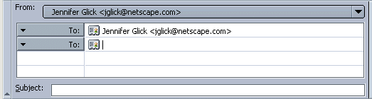
By default the address autocompletion feature is enabled. Using the Addressing Preference Panel, users can disable the feature. The examples below assume that the feature is enabled.
If there are multiple matches, a dropdown list of possible matches is displayed. The list of matches is dynamically updated as the user types the address. The list of matches is scrollable. The up and down arrow keys can also be used to navigate the list.
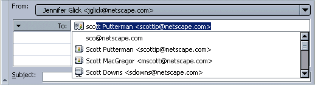
Pressing return will accept the address and move the cursor to the next line. Pressing tab will accept the address and move the cursor to the Subject field. Typing additional characters or backspace will cancel the current completion and reset the cycle.
Autocomplete does not occur until after the user has stopped typing and about 300 ms have passed. The user can accelerate this search by pressing tab/return.
Forward Delete or Backspace will erase the completion string. The End and Right Arrow keys will accept the completion string and move the insertion point to the end of the current line.
There are three possible types of results: a unique match, no match, and multiple matches. A match can be based on either a Pretty Name, Nickname or an Email address.
1. If there is one exact match, autocomplete on the match. The dropdown menu list is not shown. The completion string displays the name of the person (if available) and the email address. Pressing return will accept the address and move the cursor to the next line. Pressing tab will accept the address and move the cursor to the Subject field. Typing additional characters or backspace will cancel the current completion and reset the cycle.
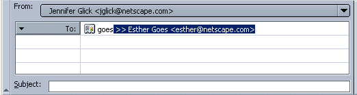
(Future Enhancement - use green colored text as an additional clue)
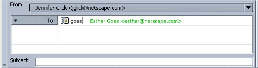
If there are no exact matches and the user selects Enter/Return take what they have typed and add the completion string "@<default-domain>". The dropdown is displayed to show the user there are no other matches.
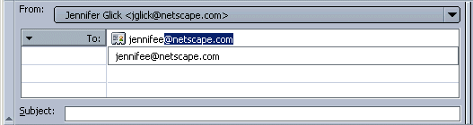
(Future Enhancement - use red colored text and <No match found> instead of the dropdown)
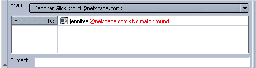
If there are no matches to what the user has typed, the
completion string will vary based on the text typed:
Example 1, I type "Droopy" and pause: Droopy@netscape.com <No
match found>.
Example 2, I type "Droopy Dog" and pause: Droopy Dog
droopy@netscape.com, dog@netscape.com <No match found>.
Pressing return will cause the text to complete to droopy@default.com
or to droopy@default.com,
dog@default.com. Each address should appear on a separate
line.
Autocomplete again address books. The completion string displays the name of the person (if available) and the email address of the first entry after the default domain entry. Pressing return will accept the address and move the cursor to the next line. Pressing tab will accept the address and move the cursor to the Subject field.
If there is one exact match in a local address book and no LDAP matches (or "Use the address and do not search in the directory" is checked in Preferences), no dropdown is displayed. The exact match is pre-filled. Enter or Tab accepts the pre-filled entry.
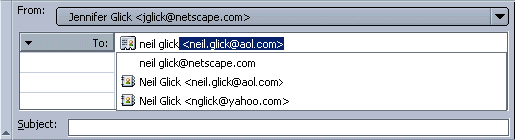
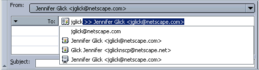
This still valid? Note that multiple matches only apply to names matching the typed string which have unique email addresses. If all of the matches have the same email address, then it is considered a unique match and the first card is used for completion.
Users can also setup Mail to autocomplete again one LDAP directory (multiple directories to be added in the future). If a potential match if from an LDAP directory, the Directory icon appears in front of item.
If a problem occurs regarding an LDAP directory which is setup for autocompletion, the text "<Error <connecting/contacting/searching> the LDAP server>" is displayed, along with an "Unavailable LDAP Server" icon. Users can select the menu item and view a dialog for more information regarding the problem.
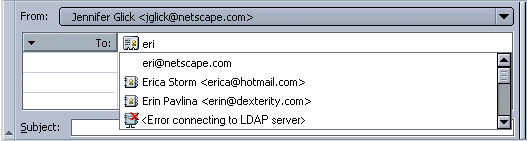
1) Search for a name with no matches in your local address book
but one exact match in an LDAP directory. Dropdown menu shows the
default domain + the LDAP match. The LDAP match is pre-filled into
the text field.
2) Same scenario as 1. Hit tab or Enter. The LDAP match is entered
into the addressing area (not the default domain match).
3) Search for a name with no matches in your local address book
but multiple matches in an LDAP directory. The default domain is not
pre filled nor pre-selected when you hit Enter or Tab.
4) Search for a name with no matches in your address book and LDAP
directory. The default domain is properly appended and pre-filled
into the text field.
5) Search for a name with at least one valid address book match and
at least one LDAP match. The pre-filled entry is the first address
book match. Enter or Tab should also choose this first address book
match (not the default domain).
Autocomplete again Mailing Lists in the user's Local Address Books is also available.
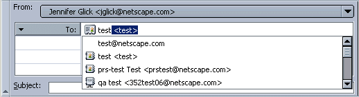
Potential enhancement to make it more apparent when a potential match is a mailing list item verses an entry for an individual. Add the text "- Mailing List" at the end of the string. And/or use the Mailing List icon in the dropdown list of potential matches. If the user selects the mailing list, the Mailing List icon would replace the Individual Card icon for that item in the addressing area.
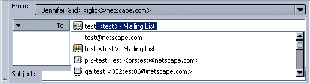
Pinpoint Addressing does not currently apply to addressing lines whose recipient type is set to Newsgroup: or Followup To:.
In the AB window, user selects an entry with no email address and clicks on "Compose". New Message window opens with the entriy's name, followed by "<No email available>" in red.
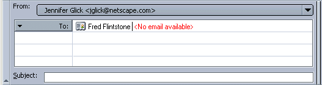
By default the address autocompletion feature is enabled. Using the Addressing Preference Panel, users can disable the feature by deselecting the "Local Address Books" and "Directory Server" items.
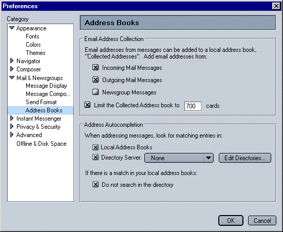
|
Issue |
Priority |
|
When one match is found, complete address with green text blur string |
|
|
When no matches are found, autocomplete with "@domain.com" (as appropriate) and "<No match found>" in red text blur string |
|
|
Netscape only - Auto Complete on Buddy Name. (But don't show the Buddy Name in the message when it is sent. Replace it with the Pretty Name or Email Address if Pretty Name not available). |
|
|
Auto Complete on multiple recipients on same line separated by commas. |
|
|
Drop down list is resizable. Or a pref to set how many matches are visible without scrolling. |
|
|
Auto-completion functionality for newsgroup addressing. The most recently addressed newsgroups are remembered and auto-populated as the user types. |
|
|
Auto completes on Mailing Lists in any of the users address books. |
1) Search for a name with no matches in your local address book
but one exact match in an ldap directory. Verify that the popup shows
up showing the default domain + the ldap match. the ldap match should
be the entry pre filled into the text field.
2) Same scenario as 1. Hit tab or enter. Make sure the ldap match is
the default value actually placed into the widget instead of the
default domain match.
2) Search for a name with no matches in your local address book but
multiple matches in an ldap directory. Verify that the default domain
is not pre filled nor pre selected when you hit enter or
tab.
3) Search for a name with no matches in your address book and LDAP
directory. Verify that the default domain is properly appended and
pre-filled into the text field.
4) Search for a name with at least one valid address book match and
at least one ldap match. Verify that the prefilled in entry is the
first address book match. Enter or tab should also choose this first
address book match (not the default domain).
5) Search for a name with one exact match in the address book and no
ldap matches. You shouldn't see a popup at all. You should see your
exact match get pre filled in automatically and enter or tab
automatically accepts that.